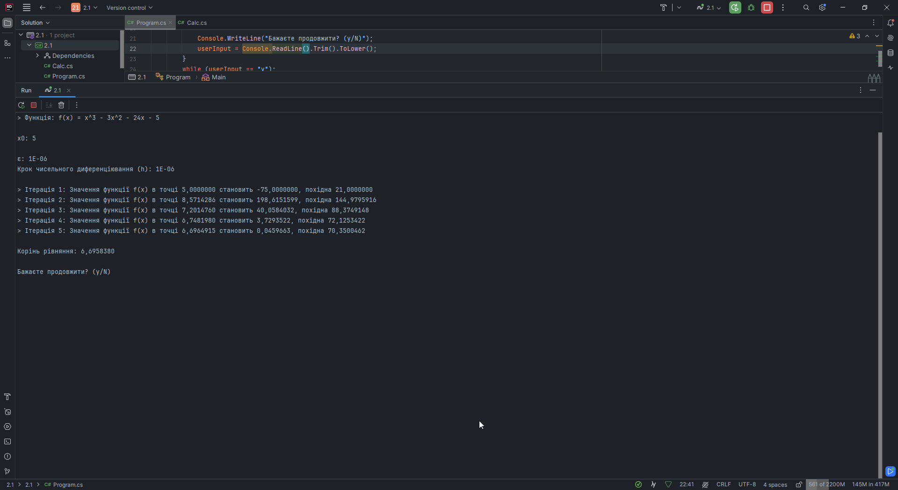
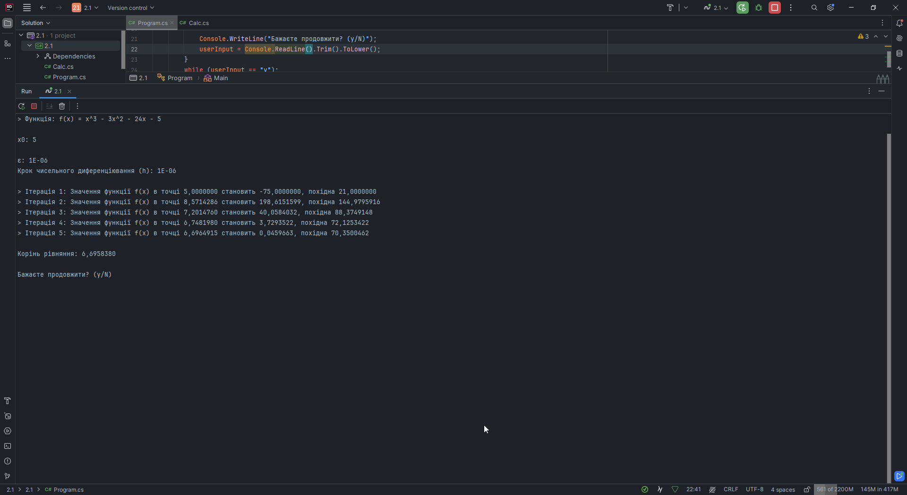
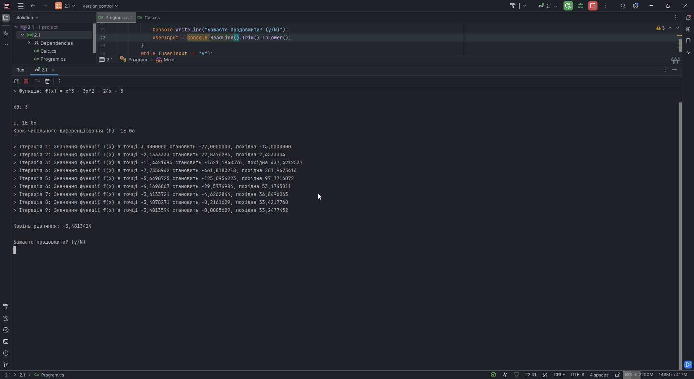
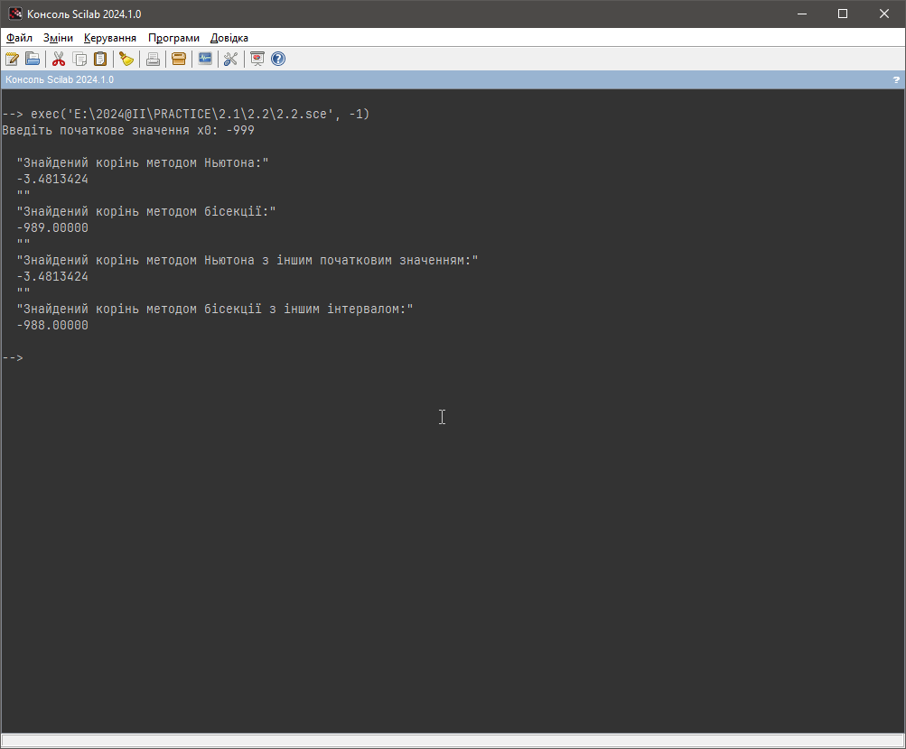
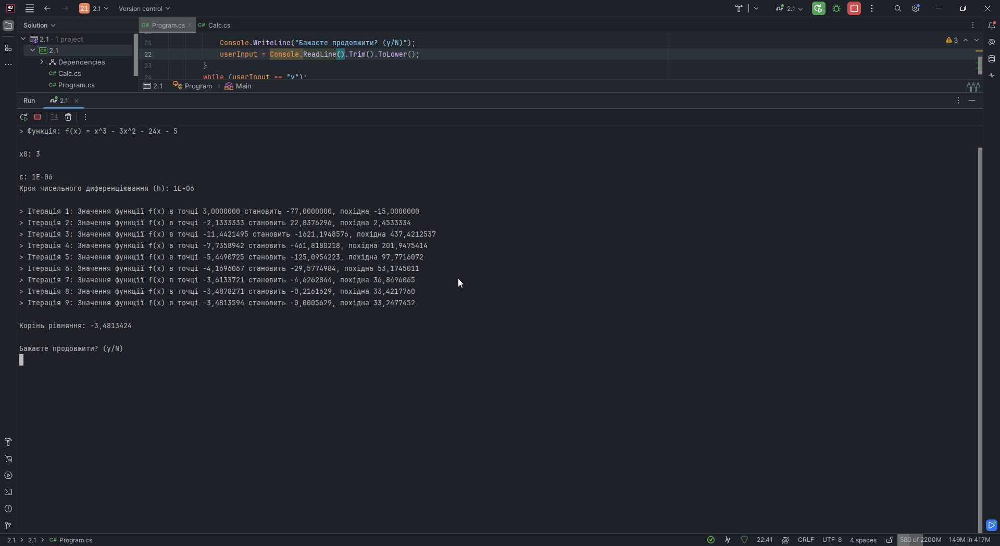
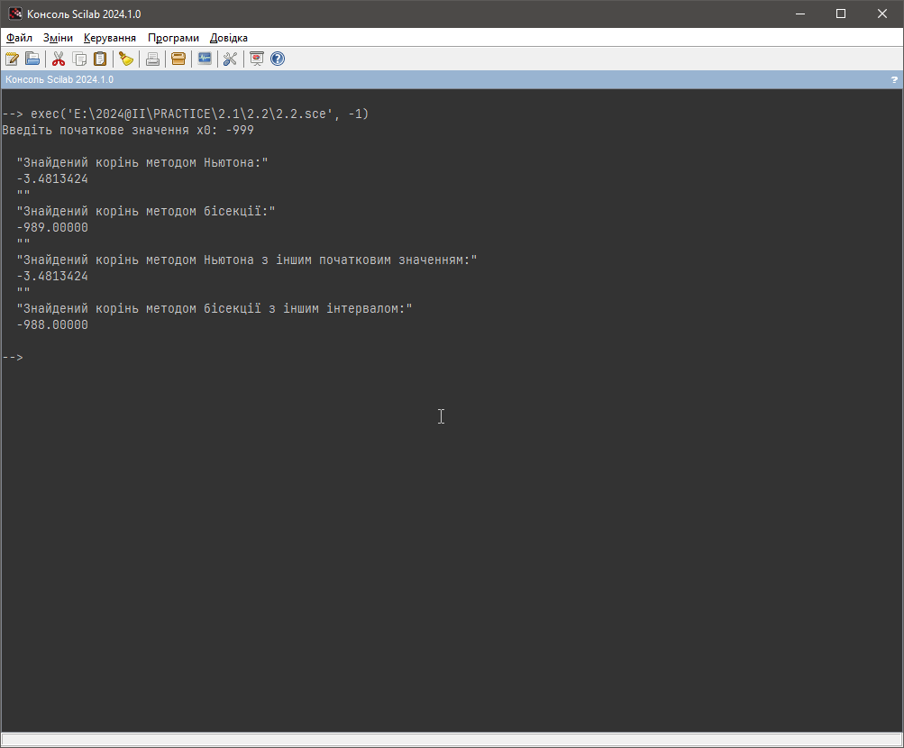
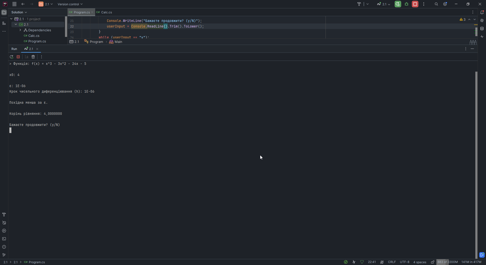
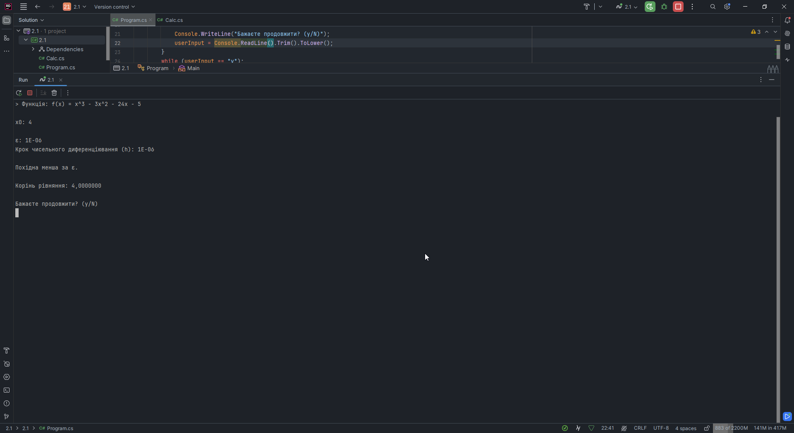
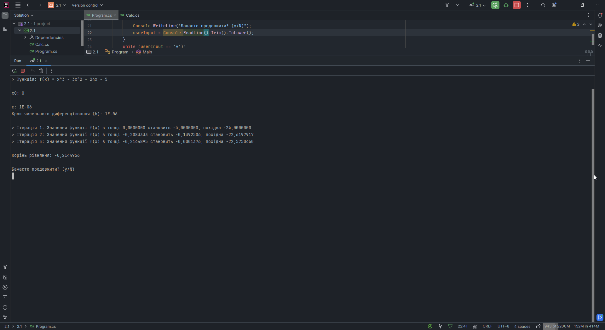
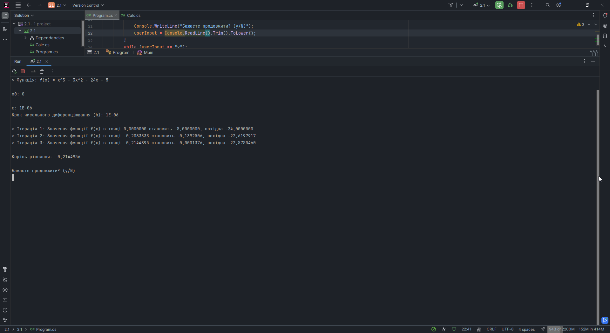

Моя Ознайомча практика 2024
Завдання 2 - ЧИСЕЛЬНІ МЕТОДИ
Ознайомитися з одним із чисельних методів та виконати його реалізацію мовою програмування високого рівня (за винятком Basic, Pascal, Fortran), засобами програмування Scilab та перевірити правильність отриманих програмних рішень за допомогою інших засобів Scilab.
ВАРІАНТ 9
Чисельний метод: Метод дотичних / Ньютона
Нелінійне рівняння:\[x^3 - 3 * x^2 - 24 * x - 5 = 0\]
У якості мови програмування високого рівня була обрана мова C#.
Код C#:
public class Calc
{
public static void Answer(double x0)
{
Console.WriteLine("> Функція: f(x) = x^3 - 3x^2 - 24x - 5");
Console.WriteLine();
// f(x) = x^3 - 3x^2 - 24x - 5
Func f = x => Math.Pow(x, 3) - 3 * Math.Pow(x, 2) - 24 * x - 5;
const double epsilon = 1e-6; //точність
const double h = 1e-6; //крок чисельного диференціювання
Console.WriteLine($"x0: {x0}");
Console.WriteLine();
Console.WriteLine($"ε: {epsilon}");
Console.WriteLine($"Крок чисельного диференціювання (h): {h}");
Console.WriteLine();
var x1 = x0;
double fx; //f(x)
double fxPrime; //f'(x)
int iteration = 0; //кількість ітерацій
while (true)
{
fx = f(x0);
//Знаходження значення похідної функції f(x) у точці x0
fxPrime = (f(x0 + h) - f(x0 - h)) / (2 * h);
if (Math.Abs(fxPrime) < epsilon)
{
Console.WriteLine("Похідна менша за ε.");
break;
}
x1 = x0 - fx / fxPrime;
if (Math.Abs(x1 - x0) < epsilon)
{
break;
}
iteration++;
Console.WriteLine($"> Ітерація {iteration}: Значення функції f(x) в точці {x0:F7} становить {fx:F7}, похідна {fxPrime:F7}");
x0 = x1; //щоб не збивались ітерації
}
Console.WriteLine();
Console.WriteLine($"Корінь рівняння: {x1:F7}");
Console.WriteLine();
}
}
class Program
{
static void Main()
{
Console.OutputEncoding = Encoding.UTF8;
string userInput;
do
{
Console.Clear();
Console.WriteLine("Введіть x0:");
var x0 = double.Parse(Console.ReadLine());
Console.Clear();
Calc.Answer(x0);
Console.WriteLine("Бажаєте продовжити? (y/N)");
userInput = Console.ReadLine().Trim().ToLower();
}
while (userInput == "y");
Console.ReadKey();
}
}
Код Scilab з усіма перевірками:
// Функція за варіантом
function y = f(x)
y = x^3 - 3*x^2 - 24*x - 5;
endfunction
// Похідна від функції
function y = df(x)
y = 3*x^2 - 6*x - 24;
endfunction
// Ініціалізація метода Ньютона
function x_root = newton_method(f, df, x0, epsilon)
x = x0;
while abs(f(x)) > epsilon do
x = x - f(x) / df(x);
end
x_root = x;
endfunction
// Метод бісекції
function x_root = bisection_method(f, a, b, epsilon)
while abs(b - a) > epsilon do
c = (a + b) / 2;
if f(c) == 0 then
x_root = c;
return;
elseif f(a) * f(c) < 0 then
b = c;
else
a = c;
end
end
x_root = (a + b) / 2;
endfunction
x0 = input("Введіть початкове значення x0: ");
epsilon = 1e-6;
x_root_newton = newton_method(f, df, x0, epsilon);
disp("Знайдений корінь методом Ньютона:");
disp(x_root_newton);
disp("");
// Перевірка за допомогою методу бісекції
a = x0 - 10; // нижня межа
b = x0 + 10; // верхня межа
x_root_bisection = bisection_method(f, a, b, epsilon);
disp("Знайдений корінь методом бісекції:");
disp(x_root_bisection);
disp("");
// Перевірка за допомогою іншого початкового значення
x0_check = x0 + 1;
x_root_newton_check = newton_method(f, df, x0_check, epsilon);
disp("Знайдений корінь методом Ньютона з іншим початковим значенням:");
disp(x_root_newton_check);
disp("");
// Пперевірка за допомогою методу бісекції з іншим інтервалом
a_check = x0_check - 10; // нижня межа
b_check = x0_check + 10; // верхня межа
x_root_bisection_check = bisection_method(f, a_check, b_check, epsilon);
disp("Знайдений корінь методом бісекції з іншим інтервалом:");
disp(x_root_bisection_check);
Перевірка роботи
Візьмемо деякі значення x0 для тестування (таблиця 1):
| № | x0 | Очікуваний результат | |
|---|---|---|---|
| Scilab | C# | ||
| 1 | 5 | 6.6958380 | 6,6958380 |
| 2 | 3 | -3.4813424 | -3,4813424 |
| 3 | -999 | -3.4813424 | -3,4813424 |
| 4 | 4 | Inf | 4 (inf) |
| 5 | 0 | -0.2144956 | -0,2144956 |
Скріншоти роботи (рисунок 1 - 10):
 Рисунок 1. Тест 1 Scilab

Рисунок 2. Тест 1 C#
Рисунок 1. Тест 1 Scilab

Рисунок 2. Тест 1 C#
 Рисунок 3. Тест 2 Scilab

Рисунок 4. Тест 2 C#

Рисунок 5. Тест 3 Scilab
Рисунок 3. Тест 2 Scilab

Рисунок 4. Тест 2 C#

Рисунок 5. Тест 3 Scilab
 Рисунок 6. Тест 3 C#
Рисунок 6. Тест 3 C#
 Рисунок 7. Тест 4 Scilab

Рисунок 8. Тест 4 C#
Рисунок 7. Тест 4 Scilab

Рисунок 8. Тест 4 C#
 Рисунок 9. Тест 5 Scilab

Рисунок 10. Тест 5 C#
Рисунок 9. Тест 5 Scilab

Рисунок 10. Тест 5 C#
Висновок
Порівнюючи отримані результаті у Scilab та C#, відповіді ідентичні в усіх тестах. Можливі похибки можуть виникнути при 9-10 знаках після коми.